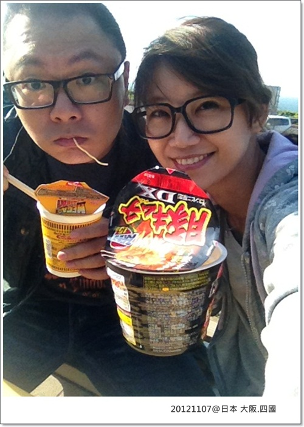
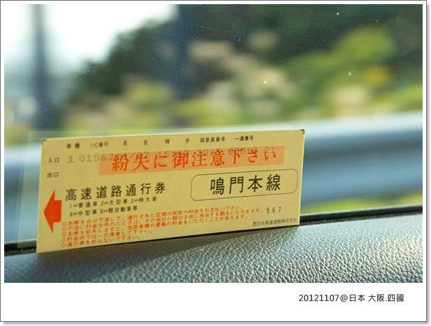

2012/11/7-11/11 我們跟著卡內拔麻飛了躺日本回來啦！
今年真是幸福的一年，4月去了義大利，11月又跟上日本行，努力賺錢就要為了讓生活更美好啊！
但希望我的荷包可以像卡內拔一樣永遠不會扁掉醬
但我娘非常開心的收下這小孫子，還叫我不用太快回來！！有夠過份的

真想不到有天我們四個還能一起出國
本來是要去東京+輕井澤，行程變化很多，到最後決定改大阪+四國，重點是要開車自由行
猛哥就是被這點戳中，不然本來要被拋棄了說XD
這次主要是去四國，在大阪只待了一天，所以卡內麻行前一直強調是去鄉下
行程由卡內麻負責，吃喝拉撒全由她安排，所以預算也是以驚人的速度在爆增！！！
哈哈哈，到機場繳去銀庫的小朋友跟當初預報的差很大！！！！媽媽，泥醬對ㄇ?
為了幫我們省荷包，委曲了卡內拔陪我們一起搭廉價航空 JetStar捷星航空
而且還怕我們反悔，馬上約覓熊盯著我們把機票訂好，我們這分母實在太好控制了 哈哈
結果才慢了這幾分鐘，換卡內麻訂的時候，他們的票價硬生生的貴了1千多塊，噗哈哈哈哈
我跟猛哥絕對是出遊好咖，大家一起出去玩要相互配合，絕不過度麻煩別人，造成別人負擔
畢竟大家都是花錢旅行，不是來當誰的保姆

這個超好用的小幫手WI-HO分享器，Heavy user是一定要辦的啊！
這五天上網打卡全靠它了，一天只要299元，四個人share超划算，而且在大城市都有4G的訊號
連我們四萬十川這鄉下都有3G，訊號也很穩定，一整個超方便！大推
而且桃園機場有櫃台可以直接領取機子，只不過我們班機太早櫃台還沒開，所以是前一天卡內麻先去拿回來
續電力官網標示約3－4小時，但我們實際使用的結果，只要充飽電，電力大概都可撐 8－10 小時，電力持久這點太棒了！
黏很緊(?)的林氏夫妻
這座位真的好小好緊，男生坐起來應該還蠻不舒服的，還好航程大概3小時左右就到關西空港了

到了關西機場排隊等出關，還說我咧！
這三位還不是嚴重的低頭族，而且不能離我太遠，因為分享器在我這兒呢！哈哈哈
給我顧這台機子就對了，絕對不會讓它有沒電的時候！

出關就看到小小的楓紅，卡內拔此行最期待就是拍到紅通通的楓葉
是說老爸，你用修的也可以修到紅到發紫沒問題呀！XDDDD
到高知的路程遙遠，一出關立刻去日產NISSAN領我們的車車
這次租的是藍色那台NOTE，一天的租金大約是日幣8610元，三天租下來約一萬塊台幣左右
因為考量有行李要帶著跑，所以不能租太小台的
租車有抽獎，抽到日幣30元的某連鎖店的折價卷，爛爆了！！！

這就是我們三天的夥伴，NISSAN NOTE 小藍
服務人員在跟卡內麻稍微解說一下導航及其他功能的操作方式
我們就負責把行李塞進後車箱，呃.....差點塞不下三個行李箱，空間剛剛好一點都沒剩

帶著忐忑興奮的心情準備出發啦！

DAY1 關西_淡路SA_室津PA_高知 (依序為ABCD四個點)
全長 約 335 公里 預計5 小時 39 分鐘到

由卡內麻第一棒，因為只有她看的懂路標跟聽的懂『娜美醬』在講什麼碗糕 XD
(註:『娜美醬』是我們幫導航取的藝名)

過第一個收費站，超緊張的！因為沒有ETC卡，所以我們只能走，「一般」收費車道
日本的「一般」收費車道，又一下在左邊，一下右邊，沒有固定 
害我們每次都要很緩慢的看清楚點，好在車不多，不會有人狂按喇叭
這趟開車，每個人都有不同的危險(?)駕駛點，超好笑！
像卡內麻就是很偏左邊，不時會壓線，有好幾次感覺跟旁邊的車貼超近，超可怕的！！！
過收費站可憐的伯伯整個半身都伸出來收錢了，卡內麻再左一點，就要害他"豆頭哉"了啦！XDDDDD

這次在日本開車心得就是:貴! 貴! 貴!非常貴! 高速料金(過路費)費用驚人
距離制收費是日本高速道路收費的主要方式，入口取票，出口結算，中間理論上不會有收費站
而且日本的導航話真的很少，要下IC(Interchange)交流道時也不會再多提醒一下
本來要到淡路SA(Service area)休息站停留吃午餐，結果不小心就錯過了交流道，臨時決定往下一個室津PA
PA大概就是只有簡單停車場跟廁所可使用，SA就可能多了商店＆加油站的服務
11:14分關西空港出發 經過116公里 12:59到室津PA 比預估早到半小時
跟這兩位偽爸媽出來玩真好，荷包驚人(?)之外，體力耐力又超好，被丟包的很有可能是我們 XD
室津PA果然只有超商沒別的可以吃，就吃吃泡麵隨便解決第一餐
配上成人寫真，哇拷！！胃口大開呀!! -->猛哥

浩呆我ㄤ，有這麼餓嗎？都要自拍了硬是要再吃一口麵
另外那倆老嫌外頭風大不出來跟我們一起野餐

淡路島Awaji-shima Island，嗚石海峽和鳴門海峽之間的島嶼
位於兵庫縣南部、瀬戶內海的東部，是日本第三大島，在瀬戶內海屬第一大島。
日本的導航安全考量在行進間是不可以使用的，一定要是靜止踩好腳剎車才可以開始設定
雖然說是安全，但其實也有小小的不方便，萬一設錯了或找不到就非得找個地方停下重設
但他們GPS真的很讚，輸入電話也可以找到目的地，好厲害！

因為要一路飆到高知，第二棒就派台灣不老駕駛(?)卡內拔上場
如果是走一般車道通常都會吐一張票給你，取票口有上下兩個，機器會自動依車身高度吐票給你
拿了票就可以在高速道路上就一路狂飆，下高速公路時再到一般車道的出口的料金所結算付費
都是人工結算，票亭旁邊會有看板顯示金額，現金與信用卡都收

延路的楓紅，好美

13:45 再出發 經過219公里 16:14到高知 卡內拔飆車 比預計早了一個小時
今晚住宿的飯店有搭配停場場，在日本開車一定要停在停車場，沒有路邊停車這回事，所以也都需付費 (有料)
開車自由行，莫名其妙錢會一直噴出去，想開車的朋友多存點錢吧！XD

第一天上路實在是太新鮮太好玩了，卡內麻大概死了上千萬個細胞，她整路比開車的人還緊張，哈哈哈
至於卡內拔開車最大的狀況就是不停的把方向燈打成雨刷，三天下來累積的次數高達12次，榮登榜首！！賀！！！！
第一晚住在高知市WELCOME HOTEL，飯店離商店街非常近 很方便
但是房間只有暖氣，太熱了！所以我們開窗睡
結果半夜還有一群不回家的醉漢(?)在大聲嚷嚷，害我第一天沒睡好

晚上卡內麻要帶我們去吃著名的土佐料理！
下一篇宵夜時間發文好了 （壞心）